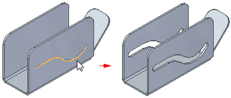

Slot command
Creates a slot feature along a tangent continuous sketch.

Note:
The centerline of the slot can be used to position components in an assembly using the path relationship. A slot axis is available at the midpoint of the center-line that can also be used to position components in an assembly. See the help topic Assembly relationships.